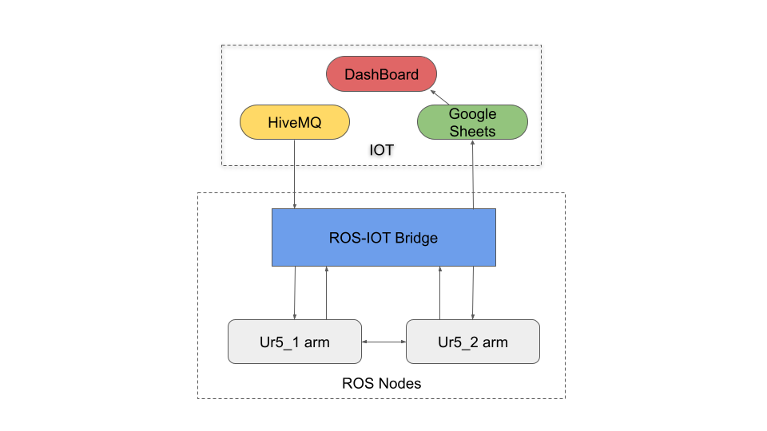
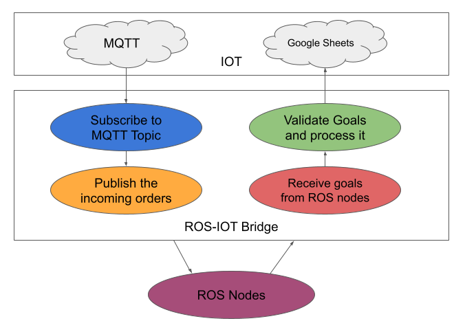
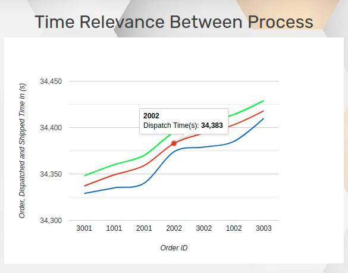

Implementation
Objective
The objective of this task is to implement an Autonomous Warehouse Management System to process, sort, dispatch and ship the packages based on incoming customer orders from different cities by taking into consideration the priorities allotted for the packages using two UR5 arms.
Process Flow
The important part of this implementation is ROS communication. ROS acts as an effective median between all the platforms that we have used in the theme. First, we will look into the flow chart of our implementation which shows the flow of data in different nodes.

The explanation for the above image is explained as under.
- The first process in this implementation is to get the incoming orders from HiveMQ using ROS-IOT Bridge.
- The orders that are received in ROS-IOT Bridge are sent to the Ur5_1 arm node.
- The Ur5_1 arm node can prioritize the incoming goals and process the goals further.
- The ur5_1 arm picks the package from the shelf and places it in the conveyor belt, then it will send the goal to the ur5_2 arm node.
- On receiving goals from the ur5_1 arm, the ur5_2 arm node will look for that package using the logical camera.
- If it detects the package, then it will sort the package from the conveyor to the shipping bins based on its colour.
- Both the ur5 arm nodes will send the data to the ROS-IOT bridge synchronously to push the data into the google sheets.
- In google sheets, we use Dashboard sheet as a JSON endpoint for IOT Dashboard.
- IoT Dashboard shows the status of all the orders in a user-friendly display.
Now, let us see all the components mentioned in the process flow individually.
ROS-IOT Bridge
ROS-IOT Bridge plays important and acts as a base for this task. As the name states this will be acting as a medium between ROS and IOT communication. As like in the process flow, we have attached a flow chart for easy understanding.

The explanation of this flow chart is given below.
- The orders from the clients are published in MQTT Topic which should be subscribed in this node to access the data in ROS.
- To use the incoming orders in other ROS nodes, we have used ROS publisher which will publish all the incoming orders from the MQTT topic.
-
Apart from publishing to ROS topic, this node acts as an Action Server. So, that it can receive goals from multiple ROS Clients.
-
On receiving any goal from the client, the node will be validating it using the arguments passed to it. The sheet name is the validator for the goals. We are using sheet name as validator because, at the next step, we are going to push all the data in goals to google sheets.
-
If the goal is valid, then this bridge will push the data to various google sheets concerning the sheet name in the goal synchronously.
Subscription Topic - /eyrc/vb/unique_id/orders
Publication Topic - /ros_iot_bridge/mqtt/sub
ur5_1 arm Node
This node will control the ur5_1 arm present in the gazebo and rviz using moveit packages. There are two tasks that this arm needs to carry out, so we have two separate classes in a single node to complete these tasks.
The Class Camera will use the 2d camera as a sensor input and process the image to get the color of all individual packages with their position as the package name. To do this the camera needs to subscribe to the ROS topic.
Subscription Topic - /eyrc/vb/camera_1/image_raw
After subscribing to the ROS topic this will use the callback function to convert the raw_image data to image format. To get the package colour there is a need for an image processing unit which can make the image into a suitable format to decode it. We have used the QR Decoding method with the help of pyzbar to get better results.
On completion of image processing, the image is decoded with the help of pyzbar. Though it is decoded and got the colour of all the packages, we need to find its position on the shelf. For enabling this, we have used some re-arranging methods with the help of the decoded data which can arrange the colour of the packages in the proper sequence with the package name in it.
Re-arranging Method - The re-arranging is done twice one with the x position of the decoded data and the y position of the decoded data. Finally, the package name and colour are stored in the list which can be used for further processing.
The Class UR51Node will use the class camera to get the colour and package name in the shelf. Before that, the constructor of this class will interface the ur5 arm present in the gazebo to the moveit planners. Then this node will send the extracted package colour and package name to the ROS-IOT server to push the data into the Inventory Spreadsheet of the google sheets synchronously.
This node needs to subscribe to the ROS Topic which contains all the data of the incoming order which is published by ROS-IOT Bridge.
Subscription Topic - /ros_iot_bridge/mqtt/sub
This node will continuously make a callback to get the incoming orders by using ROS Subscriber. Whenever data is traced by the mqtt_callback function it will convert the message received to a suitable format to process and sends to the function algorithm.
This function algorithm is an important segment in processing orders. This will decide the orders to be processed. The decision of this algorithm will depend on the priority of the orders. In this scenario, priority is of three types high, medium, and low which in turn are received as orders like medicines, food, and clothes respectively.
After prioritizing the packages, the arm needs to pick and place the packages from the shelf to the conveyor. This process is done with the help of the function’s task, pick and place.
Function task will receive the prioritized orders, but we need to check the availability of the product and get the product positioned on the shelf which can be further processed. To obtain this, we have used the lists extracted from the class Camera. In that list, we have searched the prioritized order (in terms of colour) and package colour. Then the result of the search will be sent to the ur5_2 arm server to pick and place in one of the arguments.
Function pick and place is used by the ur5_1 robotic manipulator to manipulate the packages from the shelf to the conveyor belt. To do this, it uses the saved trajectories present in the config folder of pkg_task5. We have also threaded this function so that this function will not wait for the data to be pushed to the IOT server.
After dispatching each package to the conveyor, the status of that package is also updated on google sheets by using send goal IoT function. There are certain other functions like the store, push data, transition, and play planned path which support the above-mentioned functions to complete their respective jobs.
ur5_2 arm Node
This node will control the ur5_2 arm present in the gazebo and rviz using moveit packages. This arm needs to sort the packages from the conveyor belt to the shipment bins based on the colour of the packages.
This node will receive the goals from the server in on goal function and validates them. Validation is done to process the goals which are relevant to this server else it will reject it. Once the goal is validated, the accepted goals are further processed using the process goal function which in turn sends the processing to function sorting.
Before knowing about the sorting function we will look at the supporting functions. To get the package closer to the ur5_2 arm we need to control the conveyor belt. This is done with the help of the function control and this will power up the conveyor belt until the package reaches the specific point in the belt.
To detect the packages we need to subscribe ROS topic of logical camera 2.
Subscription Topic - /eyrc/vb/logical_camera_2
The callback function of this subscriber will continuously monitor the position of the packages when it is in the logical camera's frame. After detecting the package, we need to move our arm from its current position to the top of the package. This will also use the subscription of the logical camera 2 topics. After detecting the values for the translation the values are passed to the end effector translation function which will compute cartesian waypoints to move the arm.
Now, coming back to the sorting function which will use all the above-mentioned supporting functions to complete the manipulation. We have threaded this function to make the belt run parallel while the package is being sorted. The colour of this package received from the client is used for sorting. We have included one more thread to push data synchronously to the ROS-IOT server.
After shipping each package from the conveyor to the bins the status of that package is also updated the google sheets by using send goal IoT function to the ROS-IOT server. Also, there are some other functions like hard on_goal, on_cancel, and set joint angles which support the above-mentioned functions to complete their respective jobs.
Google Sheets
There are multiple points in this theme to push data to a spreadsheet. The importance of pushing data to a spreadsheet is to quickly check and validate the particular state of the goal because it will remain forever in the sheets. We have created an Inventory Management Sheet in google Sheets which will contain five different sheets. The purpose of each sheet is mentioned below.
Inventory sheet - This sheet will contain all the details of the packages that are available in the shelf (or) Inventory.
IncomingOrders sheet - This sheet will contain all the details of the orders sent by the consumers.

OrdersDispatched sheet - This sheet will contain all the details of the packages which are dispatched by the ur5_1 arm

OrdersShipped sheet - This sheet will contain all the details of the packages which are shipped by the ur5_2 arm along with the estimated time of delivery.

IOT Dashboard
We have made a user-friendly dashboard where the live status of the packages present in the warehouse is displayed. The dashboard consists of containers in which the data like No. of Orders, No. of Dispatched Packages, No. of Shipped Packages and the Total Income incurred by the warehouse.

Next a bar graph is depicted to represent the total time taken by a package till it is shipped after receiving the order.
We have also included a Line graph which can give us the order time, dispatch time, shipment time with respect to order id in real time(secs). The purpose of this graph is to know the time delay between various processes.

There is a Map displayed to show the cities from where the orders are received in real time. It also indicates the status of orders in the form of different coloured marker like:
Red Marker - If the order is placed and neither dispatched nor shipped
Yellow Marker - If the order is placed and dispatched and not shipped
Green Marker – If the order is placed, dispatched and shipped.

We have also included a table which will show all the necessary details of the orders which can be used to get the current state of a particular package.

We have also included a video demonstration of our warehouse dashboard. please have a look into this for better understanding.
We have discussed about all the files used in the implementation in API's Documentation.